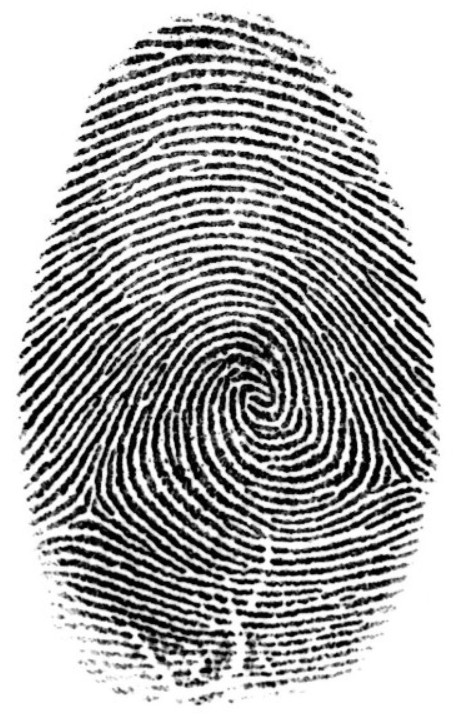

Raw Spirit Program 2018
Wśród wielu wyzwań, jakie stawia przed człowiekiem XXI wiek, pojawiają się modne hasła bycia kreatywnym i twórczym, wykazywania się twórczą postawą oraz podejmowania innowacyjnych działań, pożądane i mile widziane zwłaszcza przez pracodawców. Obywatel w swoim miejscu pracy ma być kimś o dużym potencjale, aktywnym, nieszablonowym i pomysłowym. Twórczością jest działalność, ale także twórczość określana jest jako cecha człowieka, który podejmuje różne działania i część z nich ma charakter twórczych przedsięwzięć. Wbrew powszechnej opinii, kreatywność nie jest cechą wrodzoną oraz niekoniecznie jest domeną jedynie ludzi młodych. Kreatywność jest cechą każdego człowieka, w każdym wieku, bez względu na płeć. Twórczość jest zdolnością przenikającą całe życie, tym samym wszyscy jesteśmy zdolni do zachowań twórczych, jest to przejaw postawy kreatywnej na co dzień.
Kreatywność można opisać poprzez cztery zmienne : pierwszą z nich jest poziom kreatywności, którego wyznacznikiem jest zdolność umysłowa człowieka. Rodzimy się z pewnymi cechami, preferencjami, które mają wpływ na naszą kreatywność. Wychowujemy się w określonym środowisku, które może również kształtować nasze zdolności umysłowe. To ma wpływ na nasz poziom kreatywności. Drugą zmienną różnicującą kreatywność jest styl kreatywności. Szalony dziwak, odludek niezrozumiany przez świat – taki mamy obraz kreatywnego twórcy. W przerysowanej formie powstaje z tego wymóg – kreatywni ludzie powinni odsunąć się od społeczeństwa i kwestionować wszystko, co powszechnie uznawane. O ile taki obraz sprawdza się jako fabuła filmowa, nie ma on wiele wspólnego z rzeczywistością. Osoby te po prostu reprezentują różny styl kreatywności, który jest efektem tego, w jaki sposób umysł lubi działać, jakie ma preferencje pracy. Niektórzy ludzie mają bardziej uporządkowany sposób pracy. Szlifują swoje pomysły bardziej uważnie. Używają więcej szczegółów. Często te osoby opracowują rozwiązania typu ewolucyjnego, rozwojowego. Istnieją również ludzie, którzy mają mniej zorganizowany sposób pracy i myślenia, są nieco bardziej chaotyczni. Takie osoby często dochodzą do tzw. rozwiązań rewolucyjnych. Style te oczywiście można by rozmieścić na kontinuum, a każdy z nas znalazłby tam swoje miejsce. Powyższą listę można uzupełnić o trzecią zmienną różnicującą kreatywność – poziom motywacji do działania. Jesteśmy motywowani przez różne rzeczy, a w zależności od tego, co nas motywuje, decydujemy, w jaki sposób i ile poświęcić energii na dane zadanie. Niektórzy ludzie są motywowani finansowo, inni ludzie wykonują dobre uczynki na rzecz dobra drugiej osoby – motywatorów naszych działań jest niezmiernie wiele. Czwarta zmienna to postrzeganie okazji, możliwości. Wszyscy widzimy możliwości inaczej. Jedna osoba w stosunku do określonej sytuacji może powiedzieć „wow”, spojrzeć na nią jako na fantastyczną okazję, a druga osoba w odpowiedzi na tę samą sytuację może zareagować obojętnie, sceptycznie lub nawet lekceważąco. Postrzegamy więc okazję inaczej, co może mieć znaczący wpływ na nasze działanie.
Nie ma jednego idealnego modelu kreatywności. Ile różnych sytuacji, tyle różnych dobrych modeli kreatywności.
Zawody kreatywne w swoją nazwę wpisaną mają cechę, która jest niezwykle pożądana, ale też którą bardzo trudno utrzymać przez długi czas na tym samym poziomie. Niezbędne do tego są nie tylko warunki pracy, ale także umiejętność pobudzania kreatywności samodzielnie. Oderwanie się nawet na chwilę od tego co się robi pozwala odpocząć mózgowi, zaś kontakt z przyrodą uspokaja i wycisza.
Potencjał twórczy można skutecznie pobudzać i rozwijać, i to nie tylko poprzez motywację w formie nagrody pieniężnej. Skoro twórczość jest jedną z najlepszych metod rozwiązywania problemów i kierowania rozwojem, to warto poznawać jej istotę z różnych perspektyw.
Terapeutyczny, edukacyjny i rozwojowy wymiar kreacji jest wyjaśniany przez różne koncepcje psychologiczne, pedagogiczne i kulturowe. Kreacja wiąże się z fizycznym działaniem, które z kolei jest zintegrowane z psychologiczną sferą funkcjonowania człowieka. Jest ona zatem zjawiskiem aktywnie angażującym ciało i umysł w kontekście społecznym. Procesy psychiczne uruchamiane w toku kreacji są warunkiem przebiegu procesu twórczego. Jednocześnie mogą one pełnić rolę w proces rozwoju procesu terapeutycznego lub edukacyjnego, stanowiącego kontekst kreacji. Wskazuje się na korzystny charakter procesów psychicznych zachodzących podczas kreacji (np. rozwój procesów myślenia), który ma charakter samoistny. Z drugiej natomiast strony, uruchamiane procesy mogą wspomagać następnie osiąganie wybranych celów terapeutycznych lub edukacyjnych, takich jak na przykład umiejętność dostrzegania wielu perspektyw. W literaturze można odnaleźć rozważania na temat poszczególnych procesów psychicznych będących podstawą procesu twórczego, również w świetle działań terapeutycznych i edukacyjnych. Nie powstało jednak do tej pory żadne opracowanie opisujące jednocześnie procesy poznawcze, emocjonalno-motywacyjne i behawioralne, które mogą mieć wpływ na terapeutyczne i edukacyjne walory kreacji plastycznej. Pomimo uwzględniania wymienionych wątków, problematyka poruszana w niniejszej pracy nie wyczerpuje zagadnień na temat arteterapii i warsztatów edukacji twórczej. Może natomiast być traktowana jako źródło inspiracji, zachęta do pogłębionych rozważań oraz impuls do refleksyjnych działań praktycznych, w zakresie obydwu dziedzin.
W pracy, w codziennym życiu, niezależnie od wrodzonych predyspozycji, nauczyliśmy się wykorzystywać lewą półkulę mózgu: analizujemy, werbalizujemy, szukamy logicznych powiązań, skupiamy się na szczegółach. Za kreatywność odpowiedzialna jest prawa półkula mózgu. Z resztą nie tylko za kreatywność, ale także za wyobraźnię, intuicję, zdolności artystyczne, poczucie rytmu i kolorów, szerszej perspektywy.
Dla myślenia innowacyjnego szczególnie ważne są połączenia między dwiema stronami twojego mózgu – lewą i prawą. Gdy przepływ informacji między dwiema stronami mózgu jest bardzo dobry, mózg generuje więcej pomysłów, jest bardziej elastyczny, a osobę, której mózg wytrenował w sobie taką umiejętność, możemy nazwać kreatywną. Życie by mogło się rozwijać, potrzebuje obu biegunów. Wiemy, że jest dzień, dzięki temu, że poznaliśmy noc, dostrzegamy ciepło, gdyż doświadczyliśmy zimna.
Za pomocą prostych ćwiczeń można pobudzić do pracy obie strony mózgu i korzystać z możliwości, jakie daje współpraca obu stron mózgu. Jednym z najbardziej efektywnych ćwiczeń, mających na celu pobudzenie obu stron mózgu, jest trening Stroopa. Ćwiczenie to zawiera słowa oznaczające różne kolory, z tym, że każdy zapisany jest zupełnie innym kolorem. Ćwiczenie polega na odczytaniu barwy, a nie słowa. Przykładowo wyraz zielony zapisany jest czerwonym kolorem, należy więc odczytać barwę – a zatem czerwony nie zielony. Podczas treningu dochodzi do jednoczesnej aktywacji obu półkul, ponieważ lewa chce przeczytać wyraz a prawa nazwać kolor. Pomyłki, które zdarzają się podczas tego ćwiczenia są wynikiem konfliktu półkul. Oznacza to, że jeśli czytasz wyraz zamiast podać jego kolor – to zdarza się częściej ponieważ u większości z nas lewa półkula jest dominująca, twoja lewa strona mózgu chce kontrolować prawą.
Wyrażajmy się twórczo, by pobudzić prawą półkulę mózgu. Tańczmy, śpiewajmy, rysujmy, piszmy fantastyczne opowiadania, wymyślajmy bajki dla dzieci, malujmy, róbmy to, co twórcze i manualne.
Czy jest coś, co odróżnia nas od wszystkich innych ludzi na świecie?
Tak oczywiście, to nasze DNA oraz… odcisk naszego palca. Jedyny, niepowtarzalny, unikalny. Odcisk linii papilarnych to jedna z najbardziej znanych metod identyfikacji. Dwie fundamentalne zasady wedle, których daktyloskopia może służyć do identyfikowania ludzi to po pierwsze niezmienność linii papilarnych oraz ich niepowtarzalność.
Odcisk linii papilarnych jest niezaprzeczalnym dowodem na naszą niepowtarzalność, którą otrzymaliśmy wraz z momentem narodzin. Tak samo niepowtarzalne jest nasze postrzeganie świata i chociażby sposób odczytywania i odwzorowywania kolorów. Paradoksem jest fakt, że te same odciski palców, które są potwierdzeniem naszego indywidualizmu plasują nas w zbiorze podobieństw z innymi ludźmi: wszyscy bowiem posiadamy odciski palców. Jesteśmy zatem zarówno indywidualistami w skali międzynarodowej jak i typowymi przedstawicielami rasy ludzkiej. Warto zdawać sobie sprawę z tego dualizmu.

Każdy z uczestników dostaje powiększoną odbitkę linii papilarnych anonimowej osoby.
JA - INDYWIDUALIZM
Przymknijmy oczy i odszukajmy w sobie wszelkie emocje. Zastanówmy się, które z nich są dla nas najbardziej charakterystyczne, które odczuwamy najczęściej, które są dla nas miłym wsparciem, a które nam przeszkadzają? Zastanówmy się, które z emocji stanowią dla nas największą wartość, o których chcielibyśmy powiedzieć innym. Czy są takie kolory, które najlepiej oddają nasz nastrój, naszą osobowość? Może odczuwamy potrzebę dorysowania czegoś poza grafiką linii papilarnych? Zadaniem uczestników jest pokolorować odbitkę tak by jak najlepiej oddawała osobniczy, indywidualny charakter. Po prostu każdy wypełnia kolorami odbitkę posługując się własnym kodem do oznaczenia własnej tożsamości emocjonalnej. koloruje, dorysowuje otrzymany odcisk według swojego pomysłu. Po zakończonej pracy uczestnicy rozkładają wszystkie prace obok siebie. Łatwo zauważyć, że każda z prac jest inna, niepowtarzalna.
MY - PODOBIEŃSTWA, ZBIEŻNOŚCI
Następnym zadaniem uczestników jest próba odnalezienia podobieństw dla poszczególnych prac. Mimo ogromnej różnorodności i niepowtarzalności rysunków, można jednak odnaleźć kilka wspólnych cech, według których można pogrupować prace. Zbliżona kolorystyka lub podobny sposób traktowania przestrzeni wokół odcisku. Niezależnie od tego jaką przyjmiemy systematykę jesteśmy w stanie odnaleźć swoje miejsce w grupie - wokół innych indywidualistów. Warto poświęcić kilka chwil na refleksję nad wnioskami jakie nasuwają się uczestnikom w związku z tym ćwiczeniem. Czy ważniejsze jest dla nas poczucie indywidualizmu czy przynależności do grupy?